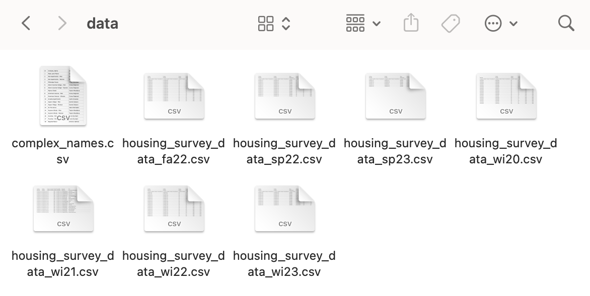

Click on the buttons inside the tabbed menu:
You’ll need access to the idrive to get to the reports code folder. This is how to get there:
1. Talk to someone in the office to make sure you have already been granted access to it.
2. Go to File Explorer and click on “This PC” on the side bar.
3. Then click on the “Computer” tab at the top left, and then click on the “Map network drive” icon.
4. After the window pulls up, type \\idrive\housing (NOTE: make sure they are back slashes ‘\’ and NOT forward slashes ‘/’) in the “Folder” input field.
5. Make sure “Reconnect at sign-in” is checked and then click “Finish”.
6. Go to "Employees" > "Troy" > "Housing Survey Program".
Before the program is able to generate the reports, we need to make sure the folders are organized and named in the exact way the program is expecting them to. Here is what each folder is supposed to have.
The four things that you are supposed to see after clicking on "Housing Survey Program" are: the "main.py" file, the "reports_functions.py" file, the "data" folder, and the "reports" folder. Usually, there is also going to be a "pycache" folder, but you don't have to worry about that since it is automatically generated by python. If it's not there, python will make a new one by itself after you run the code.
The two types of files that need to be in the "data" folder are the "complex_names.csv" file and "housing_survey_data.csv" files for that year (wi, sp, fa).
One thing you need to be aware of is that the program is case and space sensitive. So, make sure that the name of each subfolder is in lower case, and in the case of the folders with more than one word, make sure they have an underscore ("_") separating the two words instead of a space.
The first subfolder you need to have in "reports" is one with the year we are on (2024, 2025..). In that folder the four subfolders you need to have are: "all_ratings", "winter", "spring", and "fall".
The semester reports don't have any subolders, but the "all_ratings" one does. The "all ratings" folders needs to have the following subfolders: "winter_ratings", "spring_ratings", and "fall_ratings".
Sometimes to test the survey before sending it out to everyone, the department who does it will answer the survey themselves and use non-existent apartment names. Once they send you all the reponses for that semester, the test survey responses will also be in that file. The "complex_names.csv" file is used by the program to double check if the complex name in the responses actually exists. If there's ever a new complex you would need to update the "complex_names" file by adding the name of the apartment complex and who owns it. Because if the name of the new complex doesn't match exactly with one of the names in the file, it will think those responses were from someone testing the survey, and it won't generate a report for it. Just make sure to not change the name or the type of the file when you add (or remove) a complex from the list.
1. Download “Approved Housing” excel file that Brother Dougherty sends you.
2. Change to a CSV format in Excel
3. Rename the file using this format: “housing_survey_data_
4. Save it in the "data" subfolder of the "Housing Survey Program" folder.
Every semester the file will usually look a little different. Sometimes they will add more or less columns, sometimes they will change the name of the columns, and sometimes they are going to change the phrasing of the questions. There are 28 columns that we will always need to have in order for the program to work. Not only do you have to make sure they exist, but you also need to make sure they are named properly. Here is a list of the name and content of each of those columns.
1. Q18_0_GROUP - They choose the factors that made them want to live there (Ammenities, Friends, Management, Price, Location, Free Summer Contract, Ward, Friends, Others).
2. Q18_0_1_RANK - They rank from most to least important the factors they chose.
3. Q18_0_2_RANK - They rank from most to least important the factors they chose.
4. Q18_0_3_RANK - They rank from most to least important the factors they chose.
5. Q18_0_4_RANK - They rank from most to least important the factors they chose.
6. Q18_0_5_RANK - They rank from most to least important the factors they chose.
7. Q18_0_6_RANK - They rank from most to least important the factors they chose.
8. Q18_0_7_RANK - They rank from most to least important the factors they chose.
9. Q18_0_8_RANK - They rank from most to least important the factors they chose.
10. Q18_0_8_TEXT - They write what the "other" factors made them choose to live there.
11. Q1.4 - They write what what their favorite part about living there is.
12. Q1.5 - They write things that they think their complex should change or improve on.
13. Q1.6_1- They rate the management in their apartment complex from 0 to 5.
14. Q1.6_2- They rate the maintenance response in their apartment complex from 0 to .
15. Q1.6_3- They rate the cleanliness in their apartment complex from 0 to 5.
16. Q1.6_4- They rate the activities/ events in their apartment complex from 0 to 5.
17. Q1.6_5- They rate the internet in their apartment complex from 0 to 5.
18. Q1.6_6- They rate the culture in their apartment complex from 0 to 5.
19. Q1.6_7- They rate the value(price for what they receive) in their apartment complex from 0 to 5.
20. Q1.7- They write what they think management does best.
21. Q1.8- They write what they think management could do better.
22. Q1.9_1 - They rate their apartment complex overall from 1 to 5.
23. Q1.10 - They write what they think their apartment complex could do to streghten the relationship between roommates.
24. Q1.11 - They have to select between three options, about whether they are staying there, moving somewhere else, or leaving for good ("Not applicable because I am graduating, getting married, leaving school, etc.", "I plan to leave this apartment complex for another complex next semester (or my next on-track semester).", "I plan to return to this apartment complex next semester (or my next on-track semester).").
25. Q1.12 - They write write why they're choosing to stay there (if they are).
26. Q1.13 - They write write why they're to move somwhere else (if they are).
27. Complex_Name - It doesn't matter if they're capitalized as the name matches the one in "complex_names.csv".
28. Finshed - If this column doesn't exist, just add "TRUE" to each row with responses in it.
VS Code is a Microsoft app used programmers wirte, test, and run code. We will be using it to be able to open the our python files that generate the reports. Here are instructions on how to do it:
1. Open this link https://code.visualstudio.com/download in your browser.
2. Click on the Windows installation.
3. Open the “VSCodeUserSetup.exe” that was downloaded by clicking on the download.
4. Follow the instructions until you click “Finish”.
5. Open VS Code (If you don’t see it on your desktop, you can search for it using the Windows search engine).
6. Click on “File” > “Open Folder…”.
7. Open the "Housing Survey Program" folder.
8. Click on “Yes, I trust the authors”.
When the reports are generated, they are in HTML and CSS, which are the "languages" used to tell websites how they are supposed to look. Markdown Preview is an extension available in VS Code that allows us to visualize the code in the reports in as pdf. Here is how to install it.
1. Click on the Extensions tab on the left-hand side (icon looks like the Tetris blocks).
2. Search Markdown Preview Enhanced.
3. Install the one by Yiyi Wang.
4. Go to File > Preferences > Settings (at the top of window).
5. Search “print background”.
6. Make sure “Markdown-preview-enhanced: Print Background” setting is CHECKED.
1. Click on the Extensions tab on the left-hand side (icon looks like the Tetris blocks).
2. Search Python.
3. Install the one by Mircrosoft.
Pandas is a python "library" with features that make it easier to deal with a lot of data. Some functions in the prorgram need pandas to work. This is how you can install it:
1. Make sure you install python FIRST.
2. Click on “Terminal” and “New Terminal.
3. Make sure a window pops up at the bottom of VS Code.
4. Click on the window to start writing.
5. Type "pip install pandas" in the window.
6. Press enter.
7. Wait for the command to run.
8. Make sure that once it stops you see a line that say “Successfully installed pandas -”.
9. Close VS Code and open it again.
The ratings reports rank the apartments based on their ratings in different areas. The smaller apartments sometimes striggle to get enough people to fill the survey. For those cases where there is not enough reponses to get an actual rating for the complex, we set threshold on how many responses a complex needs to have in order to actually be added to the ranking table. Right now, that threshold is 20. If were ever asked to change that threshold, here is how to change it:
1. Open VS code.
2. Make sure the "Housing Survey Program" folder is oopen is the explorer.
3. Click on "reports_functions.py".
3. Press "ctrl" + "f".
4. Enter "# Setting threshold for yearly vs semester" in the search bar.
5. Locate it in "reports_functions.py".
6. Adjust both semester and yearly thresholds to whichever number you want.
7. Go to "File" on the top left corner of the window.
8. Click on "Save".
This is the only time you would ever need to do something with the "reports_functions" file. You don't even have to run it either. If when generating the reports, you have both python files open in your tabs, and you run this one by accident, the terminal would pop up at the bottom of the screen, but it wouldn't do anything. This file is bascially just instructions that help "main.py" know what it supposed to do with the data.
1. Make sure that the "Housing Survey Program" folder is open in the VS Code explorer on the left.
2. Click on "main.py".
3. Find the part at the beggining that say "Variables that change every semester".
4. Change the time frame for year and semester to match the one of reports you are trying to get
5. Use "semester" as time_frame_type, unless you want the end of the year summary for all semesters.
6. Go to "File" at the top left corner of the window.
7. Click on "Save".
8. Run the code by pressing the play button on the top righ corer of the window.
9. Wait for the terminal to appear at the bottom and for the code to stop running.
10. Make sure that the message "“Successfully created all reports" comes up in the terminal. You will need to see that message four times in semester reports, and twice for yearly reports.
After you have run the program and have seen the "Successfully..." messagges on the terminal, you now have to make sure the files are actually in their respective folders. Here is how you can do that from VS Code:
1. Go to the VS Code explorer on your left.
2. Make "Housing Survey Program" folder is open.
3. Hover your mouse over the name of the folder.
4. "Refresh Explorer" by clicking on the arrow.
5. Click on "reports" and in the explorer.
6. Go to the folder of the year you are in.
7. Find the folder where your reports are supposed to be in.
8. Make sure there are some "md" files there.
There are six different types of reports. Four of those are generated every semester, and the other two are generated once at the end of each year. These are the types of reports there are, and the folders they go in:
1. The one "All_Complexes..." yearly report found in the main section of the year folder.
2. The eight "Ratings_(Ammenities, Activities/Events, Culture, Internet, Management, Maintenance, Value, and Overall) yearly reports found in the "all_ratings" folder.
3. The one "All_Complexes..." semester report found in the semester folder.
4. The eight"Ratings_(Ammenities, Activities/Events, Culture, Internet, Management, Maintenance, Value, and Overall) semester reports found in the "(semester)_ratings" folder.
5. The one semester report for each apartment complex surveyed found in the semester folder.
6. The one semester report for each owner found in the semester folder.
Once you have made sure the reports are actually where they're supossed to, you have to convert them to PDF. Here is how to do that:
1. Make sure you have that the folder where they are is open in the VS Code explorer.
2. Click on the md file at the top of the list of the folder.
3. Make sure that after you clicked on it, it opened as a new tab next to "main.py".
4. Click on the file and drag it next to it if it didn't.
5. Click on the "“Markdown Peview Enhanced" icon at the top right corner of the screen (looks like a book with a magnifying glass).
6. Right click on the preview window that popped up.
7. Find the "Chrome Pupeteer" option (which will probably be under "Export").
8. Select "PDF" to automatically convert and open the file as in that formart.
9. Go to the VS Code explorer where the md file you just opened is.
10. Make sure that underneath it, there is a new pdf file with its same.
11. Close that new pdf preview in your browser, and then both of the markdown preview and the code tabs for that report in VS Code.
12. Follow same process for each md file you need to convert.
1. Make sure they have all been converted by checking if there is a PDF under each of your md files.
2. Find one of each of the diiferent types of reports you need.
3. Go through them to make sure there are no major issues with them.
4. Compare them to a report from the past to make sure the formatting is right.
5. Let Brother Dougherty know that you have created and gone all of the reports.
6. Show him the folder where they are located in the idrive.
7. Ask him if he would like you to move a COPY of all the reports (in PDF format) to a different folder.
8. Do it if you need to, and if not you're DONE!
9. Celebrate!
Errors are bad.